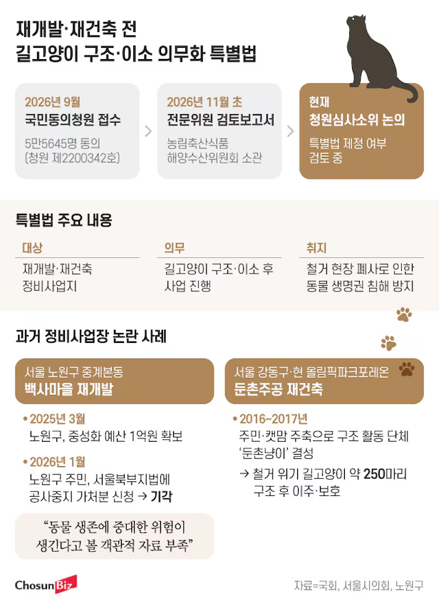

23일 국회에 따르면 농해수위는 지난 5일 전체회의에 '재개발·재건축 지역 길고양이 구조 및 안전 이소 의무화를 위한 특별법 제정에 관한 청원'을 상정했다. 5만명 넘게 동의한 이 청원은 9월 2일 국회에 접수돼 이튿날 농해수위에 회부됐다.
구조·이소 비용을 국가와 지방자치단체가 지원할 근거를 마련하고, 보호조치 없이 공사를 강행하면 제재해야 한다는 내용도 담았다.
청원인은 "재개발을 막기 위한 법이 아니다"라며 "개발 과정에서 불필요한 생명 피해를 예방하고, 사람과 동물이 함께 공존하는 도시를 만들기 위한 최소한의 안전장치"라고 밝혔다.
길고양이 안 구하면 공사 멈추나… 재개발 ‘길고양이 구조법’ 국회 심사대 - 조선비즈
고양이만 생명이고 참새, 까마귀, 두더지, 지렁이는 무생물인가?
고양이 외 동물에는 관심도 없음. 이딴게 5만명 동의..
왜 그걸 국가 세금으로 하래?
사회에 하등 도움안되는 암덩어리들 ㅅㅂ